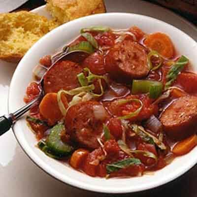

Sausage stew

Description
An all time personal favorite, easy to cook and quite filling.
This is one of my guilty pleasures.
Ingredients.
- 3 long smoked sausage
- 1 cup of Blended pepper
- 1 bell pepper
- 2 Onions
- 1 tsp Curry
- 1 tsp Thyme
- 1 tbspn Rosemary leaves
- 5 Bay leaves
- 1 tbsp Black pepper
- 1 Maggi cubes
- salt
- 1 tuber ofGinger (grated)
- 5 cloves ofGarlic (grated)
Making shambolic sausage stew.
- Fry the onions with garlic
- Add the blended pepper, let that fry for 10 minutes
- Add the tomato paste, fry for 5 minutes
- Stir the ingredients often to prevent them from burning/li>
- Add the Curry, thyme, bay leaves, rosemary leaves and ginger
- crush the maggi cubes into the pot, Stir and fry for five minutes
- Add the chicken stock and stir
- let the mixture boil for 5 minutes
- pour the rice into the mixture and add 3 cups of water, along with a tbsp of salt
- boil until the water level is a centimeter above the rice
- reduce the heat to the barest minimum, cover the top of the pot with an aluminum foil and cover with pot cover
- let the water dry, stirring intermittently
- when the rice is soft and dry the meal is ready
- if the rice is still hard, add a cup of water and boil til it dries
- you now have red and delicious jollof rice